Rethinking Training Dynamics in Scale-wise Autoregressive Generation
 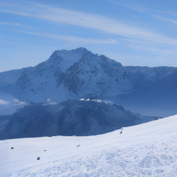
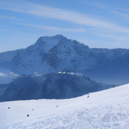
 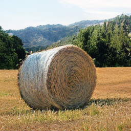
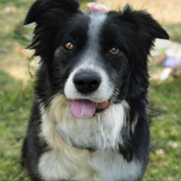
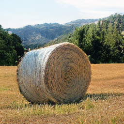
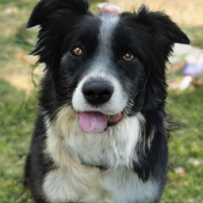
 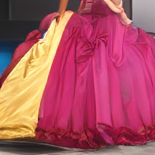
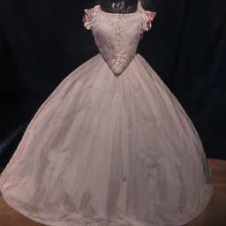
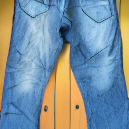
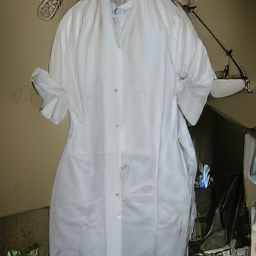
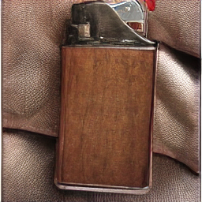
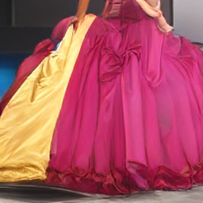
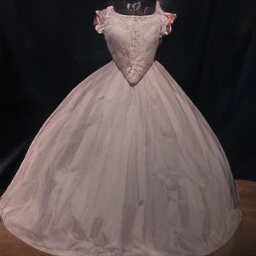
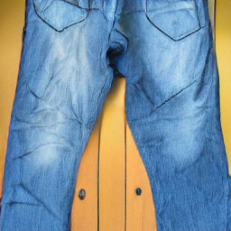
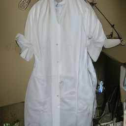
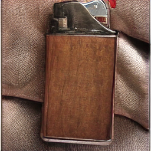
Abstract
Recent advances in autoregressive (AR) generative models have produced increasingly powerful systems for media synthesis. Among them, next-scale prediction has emerged as a popular paradigm, where models generate images in a coarse-to-fine manner. However, scale-wise AR models suffer from exposure bias, which undermines generation quality.
We identify two primary causes of this issue:
- Train–test mismatch: The model relies on imperfect predictions during inference but ground truth during training.
- Imbalanced learning difficulty: Coarse scales must generate global structure from scratch, while fine scales only perform easier reconstruction.
To address this, we propose Self-Autoregressive Refinement (SAR). SAR introduces a Stagger-Scale Rollout (SSR) mechanism to expose the model to its own intermediate predictions and a Contrastive Student-Forcing Loss (CSFL) to ensure stable training. Experimental results show that applying SAR to pretrained AR models consistently improves generation quality with minimal computational overhead (e.g., 5.2% FID reduction on FlexVAR-d16 within 10 epochs).
The Problem: Exposure Bias in VAR
Existing Visual Autoregressive (VAR) models suffer from training supervision imbalance. For latent-space supervision, coarse scales receive ground-truth signals that contain little semantic structure, while their corresponding training inputs are dominated by blurry upsampled artifacts. Consequently, the finest scale must reconstruct nearly all details, causing the hierarchical prediction process to collapse into a single dominant scale and preventing effective coarse-to-fine learning. While we could smooth the generation trajectory by downsampling in image space, this causes the earliest scales to capture most semantics and scene structure already, leaving later scales to perform only mild sharpening or super-resolution, thereby weakening the multiscale factorization of the model.
Figure 1: Illustration of training supervision imbalance.
Figure 2: Training–inference divergence caused by scale-wise supervision imbalance.
Under teacher-forcing (top), the model receives ground-truth latents at all scales; when training converged, the model produces clean generated results because it is evaluated under the same idealized inputs used during training. At inference (bottom), the model must condition on its own coarse-scale predictions. When generated early-scale latents are imperfect (e.g., 1×1), later scales, which were trained mainly as super-resolution task when using the smoothed up/down-sample image supervision, cannot correct the semantic error, leading to a complete collapse of the generation process.
The Solution: Self-Autoregressive Refinement (SAR)
SAR is a lightweight post-training algorithm that bridges the train-test gap. It consists of two key components:
Figure 3: Illustration of Self-Autoregressive Refinement (SAR).
1. Stagger-Scale Rollout (SSR)
The image is encoded into multi-scale latents \(\{f_i\}\), which condition an autoregressive generator. SSR is a two-step rollout strategy that is computationally efficient (requiring only one extra forward pass):
- Step 1 (Teacher Forcing): The model performs teacher forcing and predicts \(\hat{f}^{(T)}_i\) at all scales using ground-truth conditioning.
- Step 2 (Student Forcing): These predictions are upsampled to form scale-shifted inputs \(\tilde{f}^{(T)}_i\), enabling a second forward pass that produces student-forced predictions \(\hat{f}^{(S)}_i\).
Teacher-forcing loss provides ground-truth supervision, while the contrastive student-forcing loss aligns student-forced outputs with their teacher-forced counterparts. Together, these two passes form the Stagger-Scale Rollout used in SAR.
2. Contrastive Student-Forcing Loss (CSFL)
Naive student forcing often causes the model to drift away from the ground truth. To fix this, we introduce CSFL:
- Instead of forcing the student prediction to match the ground truth (which causes conflicts), CSFL aligns the student prediction \(\hat{f}^{(S)}_i\) with the stable teacher prediction \(\hat{f}^{(T)}_i\).
- This teaches the model to remain consistent with the "expert" trajectory even when conditioned on imperfect inputs.
Results
SAR achieves state-of-the-art results among scaling-scan autoregressive models, offering the best trade-off between throughput and image quality.
Quantitative Comparison (ImageNet 256×256)
The table below shows consistent improvements across different model sizes when applying SAR to pretrained FlexVAR models:
| Model | Params | FID ↓ | IS ↑ | Improvement |
|---|---|---|---|---|
| FlexVAR-d16 | 310M | 3.05 | 291.3 | - |
| FlexVAR-d16 + SAR (Ours) | 310M | 2.89 | 266.6 | -5.2% FID |
| FlexVAR-d20 | 600M | 2.41 | 299.3 | - |
| FlexVAR-d20 + SAR (Ours) | 600M | 2.35 | 293.3 | -2.5% FID |
| FlexVAR-d24 | 1.0B | 2.21 | 299.1 | - |
| FlexVAR-d24 + SAR (Ours) | 1.0B | 2.14 | 315.5 | -3.1% FID |
Qualitative Analysis
As shown in the visualizations, SAR produces smoother transitions between scales and possesses stronger error correction capabilities. Unlike standard VAR models that amplify early mistakes, SAR effectively refines artifacts during the coarse-to-fine generation process.
Comparison of the generation process: SAR demonstrates smoother transitions and error correction compared to FlexVAR.
Efficiency
SAR is designed as a post-training refinement stage. It requires only 10 epochs of fine-tuning on top of a pretrained model, amounting to approximately 5.5% of the pretraining cost.
Citation
@article{zhou2025rethinking,
title={Rethinking Training Dynamics in Scale-wise Autoregressive Generation},
author={Zhou, Gengze and Ge, Chongjian and Tan, Hao and Liu, Feng and Hong, Yicong},
journal={arXiv preprint arXiv:2512.06421},
year={2025}
}